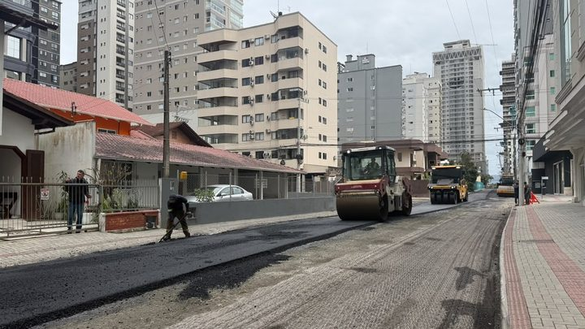
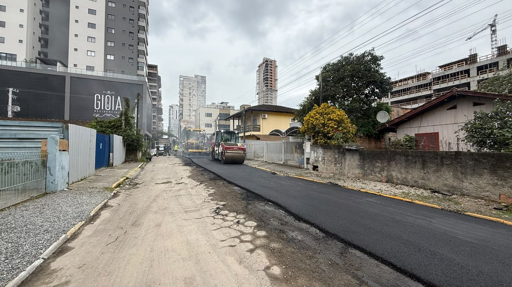
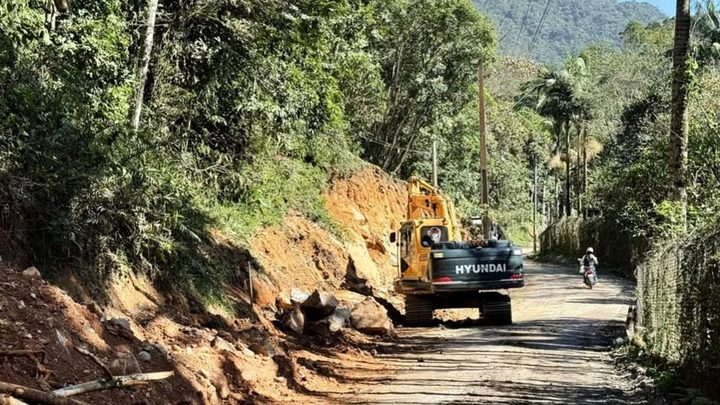

Itapema · InfraestruturaA Rua 282 leva o asfalto do Avança Itapema à Meia Praia pela primeira vez em 2026, e o Morretes ficou com cinco das nove ruas do ano
A rua que chegou ao asfalto cinco dias antes da 250.
A Rua 250, na Meia Praia, começou a receber asfalto nesta quarta-feira, 23, no trecho entre a 3ª Avenida e a Marginal Leste. Pela nossa conta, é a décima via de 2026 pelo Avança Itapema e a segunda da Meia Praia, cinco dias depois da Rua 282. A 250 já estava na lista de lançamento do programa, de 31 de julho de 2025, o que dá 419 dias entre o anúncio e o asfalto.
Em 30 segundos · Modo de Leitura, formato original Santa Informa
A Rua 250 está recebendo asfalto.
Ela fica na Meia Praia, em Itapema.
O trecho vai da 3ª Avenida à Marginal Leste.
A obra é do programa Avança Itapema.
A Prefeitura avisou nesta quarta, 23 de setembro.
Antes do asfalto veio a drenagem pluvial.
Ela já está concluída na via.
Contamos as ruas que o programa anunciou uma a uma.
A 250 é a décima de 2026.
E a segunda da Meia Praia.
A primeira foi a 282, em 18 de setembro.
São cinco dias entre uma e outra.
O bairro Morretes fica com cinco das dez.
A 250 não é rua nova na lista do programa.
Ela estava no lançamento, de 31 de julho de 2025.
Aparecia no grupo dos recapeamentos completos.
Do anúncio ao asfalto foram 419 dias.
Naquela lista, o grupo é atribuído ao Morretes.
O aviso de agora põe a rua na Meia Praia.
A Prefeitura não diz quantos metros vão ser asfaltados.
Nem quanto custa o trecho.
Nem qual empresa executa.
Nem quando a rua fica pronta.
InfraestruturaPublicada em Redação Santa Informa

A Prefeitura de Itapema informou nesta quarta-feira, 23 de setembro, que a Rua 250, no bairro Meia Praia, começou a receber pavimentação asfáltica no trecho entre a 3ª Avenida e a Marginal Leste. A drenagem pluvial da via ficou pronta antes, e é ela que prepara a rua para o asfalto. Juntando os anúncios que o próprio site da Prefeitura dedica a uma rua só, a 250 é a décima via de 2026 pelo programa Avança Itapema e a segunda da Meia Praia, cinco dias depois da Rua 282. E a 250 não é nome novo no programa: ela já estava na primeira lista, publicada em 31 de julho de 2025, 419 dias antes.
Rua 706, na Várzea, em 6 de janeiro. Rua 438, no Morretes, em 15 de abril. Rua 422, no Morretes, em 28 de abril. Trecho final da Rua 700, na Várzea, em 21 de maio. Rua 444, no Morretes, em 25 de maio. Rua 416, no Morretes, em 10 de junho. Estrada Geral do Sertão do Trombudo, em 31 de julho. Trecho da Rua 420, no Morretes, em 25 de agosto. Rua 282, na Meia Praia, em 18 de setembro. E agora a 250. O Morretes segue com cinco das dez. Contamos só os anúncios dedicados a uma via, então o número real é igual ou maior que dez, nunca menor.
O Avança Itapema foi apresentado em 31 de julho de 2025, com investimento anunciado de mais de R$ 30 milhões só na primeira fase. Aquele texto separava as vias por tipo de serviço. A 250 aparecia no grupo dos recapeamentos completos, ao lado das ruas 246C, 902B, 810, 1204, 308A e 406C, e a frase atribui o conjunto ao bairro Morretes. O aviso desta quarta situa a rua na Meia Praia. A mesma lista de 2025 já trazia as vizinhas 244, 264 e 270 como Meia Praia, no grupo do tapa-buraco, então é bem possível que seja só o jeito de escrever a lista.
O resumo de 30 segundos está no topo e a versão completa é o texto acima. Aqui ficam as três leituras da casa sobre o mesmo assunto.
Clara, a otimista
Duas ruas da Meia Praia asfaltadas em cinco dias é ritmo que o bairro não via. E repare na ordem das coisas: primeiro a drenagem, depois o asfalto. É o jeito certo de fazer, ainda que demore mais. Rua asfaltada por cima de drenagem velha volta a afundar na primeira chuva forte de janeiro.
Quem mora na 250 sabe o que é aquele trecho no verão. Poeira quando está seco, poça quando chove, carrinho de compras pulando buraco. A foto do dia mostra bem: de um lado o piso antigo esburacado, do outro a faixa preta lisa. A diferença chega antes da temporada.
Seu Prudêncio, o criterioso
Merece atenção a distância entre a promessa e a máquina. A 250 está na lista do programa desde 31 de julho de 2025, e o asfalto chegou 419 dias depois. Isso não quer dizer que algo deu errado, porque drenagem é obra demorada e a rua passou por ela. Quer dizer que a lista de lançamento não é cronograma, e vale acompanhar as outras nove da Meia Praia com esse dado em mãos.
Uma sugestão útil: publicar uma página única com as ruas do Avança Itapema, a etapa em que cada uma está e a data de conclusão. Hoje quem quer saber precisa abrir anúncio por anúncio e contar na mão, que foi o que fizemos. Um quadro só resolveria, e o dado já existe dentro da Secretaria de Obras.
Dito isso, reconheço o que está bem feito. A Prefeitura publica cada rua com nome, número, bairro e trecho, e com foto do dia. É por isso que dá para montar a série de dez vias e conferir. Órgão que só diz "seguimos investindo em infraestrutura" não permite nem essa conta.
Caco, o sarcástico
Quatrocentos e dezenove dias entre entrar na lista e virar asfalto. Em Itapema, no verão, esse é mais ou menos o tempo de atravessar a 3ª Avenida às seis da tarde.
E a rua trocou de bairro no caminho. Em 2025 era Morretes, em 2026 é Meia Praia. Mudou de endereço sem sair do lugar, o que é uma façanha até para uma rua daqui.
Agora sério, que aqui tem informação útil: se você mora ou trabalha entre a 3ª Avenida e a Marginal Leste, é rolo compactador na porta pelos próximos dias. Quem estaciona ali vai ter que arranjar outro canto, e a Prefeitura ainda não disse por quanto tempo.
Fontes: o trecho entre a 3ª Avenida e a Marginal Leste, a conclusão da drenagem, a fala do secretário de Obras e Serviços Públicos Jean do Idimar e a foto de topo estão no anúncio da Prefeitura de Itapema de 23 de setembro de 2026. A lista de lançamento do programa, o investimento de mais de R$ 30 milhões na primeira fase, o grupo dos recapeamentos completos com a Rua 250 e o grupo de tapa-buraco da Meia Praia estão no anúncio de 31 de julho de 2025. A contagem das dez vias de 2026 é nossa e sai dos anúncios que a própria Prefeitura dedica a uma rua: Rua 706, Rua 438, Rua 422, Rua 700, Rua 444, Rua 416, Estrada Geral do Sertão do Trombudo, Rua 420 e Rua 282. A conta dos 419 dias e dos cinco dias é nossa, com as datas desses mesmos anúncios. Já contamos aqui a chegada do programa à Meia Praia pela Rua 282 e o alargamento da estrada do Alto Areal. A Prefeitura não publicou custo, metragem nem empresa executora da Rua 250 até o fechamento desta matéria.

Itapema · InfraestruturaA rua que chegou ao asfalto cinco dias antes da 250.

Itapema · InfraestruturaOutra obra de via em Itapema, com o mesmo intervalo longo.
 Itapema · Poder Público
Itapema · Poder PúblicoO que a cidade contratou para a orla neste ano.